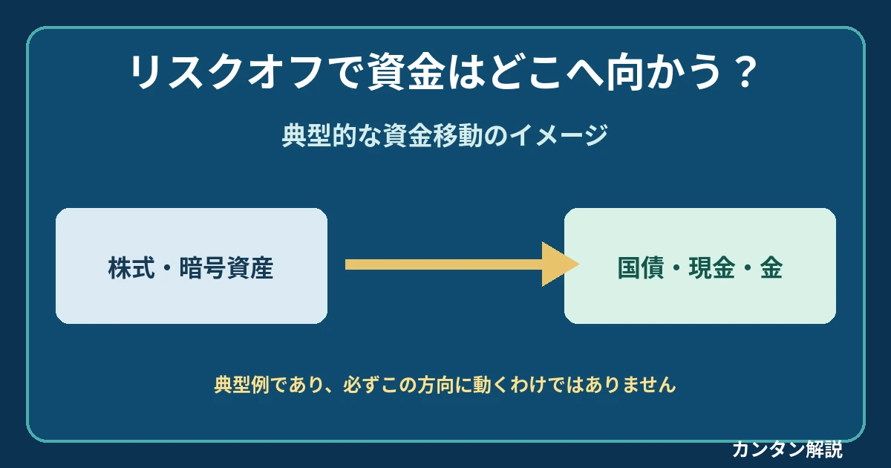

話題・トレンド
リスクオフとは？株安・円高・国債買いが同時に起こるのはなぜ？初心者向けに解説
公開・最終確認： ／ 運営者プロフィール
「リスクオフの円買い」「安全資産への資金移動」というニュースを、株式・為替・債券・金の関係から読み解きます。

リスクオフとは？
リスクオフ（Risk-Off）は、投資家が不確実性や損失リスクを警戒し、リスクの高い資産への投資を控えたり、保有ポジションを縮小したりする市場環境です。特定の市場の下落を指す言葉ではなく、投資家の姿勢を表します。
| 比較 | リスクオフ | リスクオン |
|---|---|---|
| 姿勢 | 損失回避・ポジション縮小 | 積極的なリスク取得 |
| 背景 | 不確実性・信用不安 | 景気・収益期待の改善 |
| 典型的な資金の向き | リスク資産から相対的に安全な資産へ | 相対的に安全な資産からリスク資産へ |
なぜリスクオフになるの？
景気後退懸念、金融機関の経営不安、地政学的緊張、予想外の金融政策、企業業績の悪化懸念などがきっかけになり得ます。ただし同じニュースでも市場の織り込み具合や政策対応によって反応は異なります。
リスクオフになると市場はどう動く？
投資家は価格変動・信用リスク・換金のしやすさを比較して資産配分を見直します。以下は典型的な反応であり、例外も多くあります。
| 資産 | 典型的な反応 | 背景 |
|---|---|---|
| 株式 | 売られやすい | 企業利益・景気への警戒 |
| 国債 | 買われやすい | 信用力や流動性を重視。ただし発行体により異なる |
| 円 | 買われる場合 | 円調達ポジションの巻き戻し |
| 米ドル | 買われる場合 | 決済・資金調達・安全資産需要 |
| 金（ゴールド） | 買われる場合 | 信用不安への備え |
| 暗号資産 | 売られる場合 | リスク資産としてのポジション縮小 |
いずれも一般的な傾向であり、必ずその方向に動くわけではありません。
なぜ株安と国債買いが同時に起こるの？
将来利益への不安から株式を減らし、相対的に信用力の高い国債へ資金を移す動きが起こることがあります。既発国債は買い需要が強まると価格が上がり、一般に利回りが下がります。一方、インフレ懸念、財政不安、流動性不足が強い局面では株式と国債が同時に売られ、株安・国債安（利回り上昇）となることもあります。
なぜリスクオフで円高になることがあるの？
低金利の円を借りて他通貨の資産に投資していた円キャリートレードが解消される際、外貨を売って円を買い戻す動きが生じることがあります。こうした円建て資金調達ポジションの巻き戻しは円高要因になり得ます。ただし日米金利差、米ドルの資金需要、日本銀行の政策見通しなどによって、リスクオフでも円安になる場合があります。
リスクオフで金（ゴールド）が下落することもある？
金は信用不安への備えとして選ばれることがありますが、ドル高、実質金利の上昇、損失補填や現金確保のための換金売りによって下落する場合もあります。安全資産とは価格が下がらない資産という意味ではありません。
リスクオフと信用スプレッド
信用スプレッドは、企業の社債利回りと比較対象となる国債等の利回りの差です。企業の返済能力への警戒が強まると、社債により高い上乗せ利回りが要求され、信用スプレッドが拡大することがあります。市場の流動性や需給も影響します。
リスクオフと市場の流動性
多くの投資家が一斉に売ろうとすると買い注文が薄くなり、売値と買値の差（スプレッド）が広がったり、想定価格からずれて約定するスリッページが発生したりします。価格下落が証拠金不足や損切りを誘発すると、さらに売却が増える場合があります。
- 売り注文の集中
- 買い注文が薄くなり価格下落
- 損切り・証拠金対応で追加売却
この循環が強まると、値動きが短時間に拡大することがあります。
リスクオフと金融政策
FRBや日本銀行の利上げ・利下げ予想、量的引き締め（QT）による市場の資金環境の変化は、投資家の姿勢に影響し得ます。利下げ期待が高まっても、その理由が深刻な景気悪化なら株式が売られる場合があり、「利下げ＝リスクオン」とは限りません。
リスクオフとボラティリティ
ボラティリティは価格変動の大きさを表します。VIX指数はS&P 500のオプション価格から算出される今後約30日間の予想変動率の代表的指標です。「恐怖指数」と呼ばれますが、市場全体の恐怖を直接測るものではありません。
リスクオフを見極めるためのチェックリスト
株価指数、国債価格と利回り、ドル円などの為替、金価格、信用スプレッド、VIX指数、市場の流動性、金融政策・景気指標を合わせて確認します。単独の指標からリスクオフと断定することは避けましょう。
- 株価指数の動き
- 国債価格と利回り
- ドル円などの為替
- 金価格
- 信用スプレッド
- VIX指数
- 市場の流動性（売買スプレッド・約定状況）
- 金融政策・景気指標
金融ニュースでの読み方
「株安・円高・国債高」なら景気不安や円キャリー解消と国債への逃避が同時に進んだ可能性があります。一方「株安・ドル高・国債安」なら、インフレ懸念による金利上昇やドル資金需要、国債の需給悪化が重なった可能性があります。いずれも架空の例で、値動きだけで原因は確定できません。
| 架空の値動き | 考えられる解釈 | 確認したい要因 |
|---|---|---|
| 株安・円高・国債高 | 景気不安と円キャリー巻き戻し、国債への逃避 | 金利差・景気見通し |
| 株安・ドル高・国債安 | ドル資金需要やインフレ・財政懸念 | インフレ率・国債需給・流動性 |
よくある質問
リスクオフとは何ですか？
投資家が損失や不確実性を警戒し、リスクの高い資産への投資を控える市場環境です。
リスクオンとの違いは？
リスクオンは積極的にリスクを取る姿勢、リスクオフはリスクを減らす姿勢です。
リスクオフになると株価は必ず下がりますか？
いいえ。業種や政策対応、すでに織り込まれた期待によっては上昇する株式もあります。
なぜリスクオフで円高になることがあるのですか？
円キャリートレードなどの円売りポジションが解消され、円が買い戻されることがあるためです。
国債や金は必ず値上がりしますか？
いいえ。インフレ、金利上昇、ドル高、財政不安、換金売りなどで下落することがあります。
リスクオフと信用スプレッドはどう関係しますか？
企業の信用不安や市場流動性への懸念から、信用スプレッドが拡大する場合があります。
VIX指数が上がるとリスクオフですか？
警戒感の手がかりにはなりますが、VIXだけで市場全体の姿勢は断定できません。
まとめ
リスクオフは投資家のリスク回避姿勢を表す概念です。株式・為替・国債・金・暗号資産の反応は金利、インフレ、信用不安、流動性、資金調達状況によって変わります。複数の市場を横断して読み解くことが重要です。
関連記事・参考教材
個別記事へのリンクは、実在URLを確認できたもののみ掲載しています。
参考情報・免責事項
VIXの定義： Cboe（VIX公式情報） 。金融政策： 米連邦準備制度 、 日本銀行 。
本記事は一般的な金融教育を目的とするもので、特定の金融商品の売買を勧めるものではありません。市場の反応は時期や状況により異なり、投資判断はご自身の責任で行ってください。